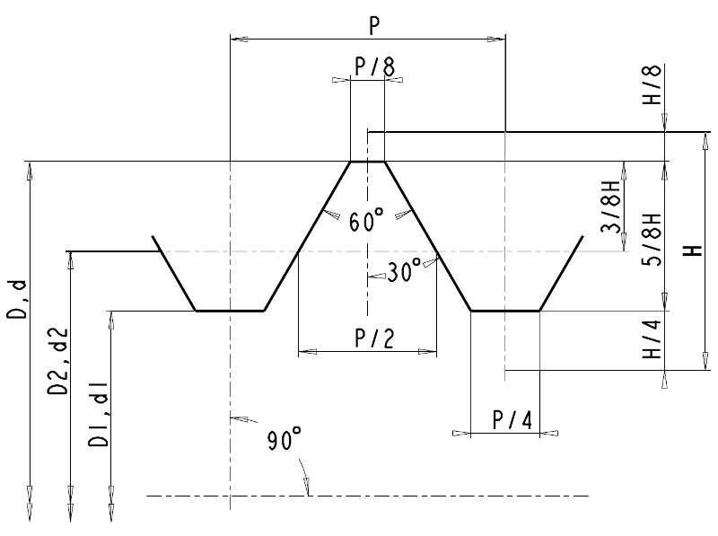

Závity ISO
Jmenovitý profil
Mezinárodní norma ISO 68 stanoví jmenovitý profil metrického a palcového závitu pro všeobecné běžné použití.
Jmenovitý profil je definován jako teoretický profil určený jmenovitými rozměry velkého, středního a malého průměru závitu.
Ke jmenovitému profilu jsou vztaženy úchylky.

- D – velký průměr vnitřního závitu
- d – velký průměr vnějšího závitu
- D2 – střední průměr vnitřního závitu
- d2 – střední průměr vnějšího závitu
- D1 – malý průměr vnitřního závitu
- d1 – malý průměr vnějšího závitu
- P – rozteč
- H – výška základního trojúhelníku
- n – počet roztečí na 1 angl. palec (25,4mm)
Vztahy v milimetrech: P = 25,4/n; H a všechny následující výšky jsou v mm.
- H = (√3/2) × P = 0,866025404 × P = 21,99704526/n
- 5H/8 = 0,541265877 × P = 13,74815328/n
- 3H/8 = 0,324759526 × P = 8,24889197/n
- H/4 = 0,216506351 × P = 5,499261315/n
- H/8 = 0,108253175 × P = 2,749630658/n
Pro výsledek v palcích se použije P = 1/n in a stejné bezrozměrné násobky P.